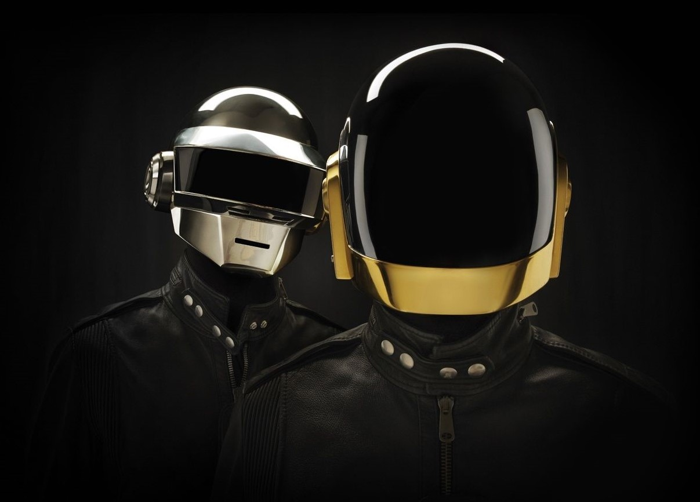

Daft Punk fue un dúo de música electrónica, formado en 1993 en Paris, Francia, por los franceses Guy-Manuel de Homem-Christo y Thomas Bangalter. Se disolvió en febrero de 2021. Sus fundadores son considerados refundadores de la música electrónica contemporánea. Alcanzaron gran popularidad en el estilo house a finales de la década de los noventa en Francia y continuaron exitosamente los años siguientes, a partir del synthpop. El dúo también fue acreditado por la producción de canciones que se consideran esenciales en el estilo house francés.
Discografia
1993 - 2021